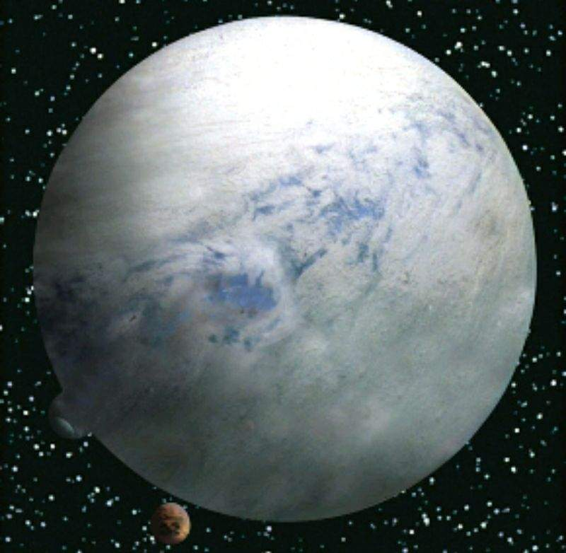

Bienvennue sur le Fan site des planète exodites de l'univers StarWars Je vous présentes mes planètes favorites A vous de faire un peu d'astronomie en utilisant la barre de recherche du menu. Il y a 61 planètes répertoriées vous pouvez rechercher grâce à un numéro à indiquer dans la barre de recherche
Coruscant
Dagobah
Hoth
